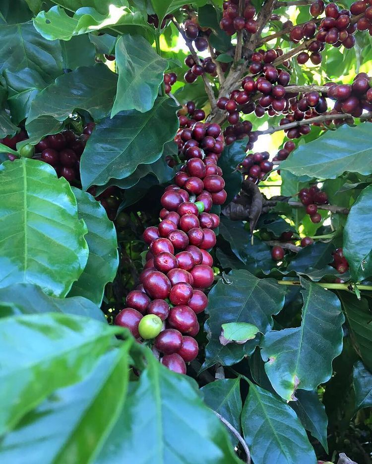
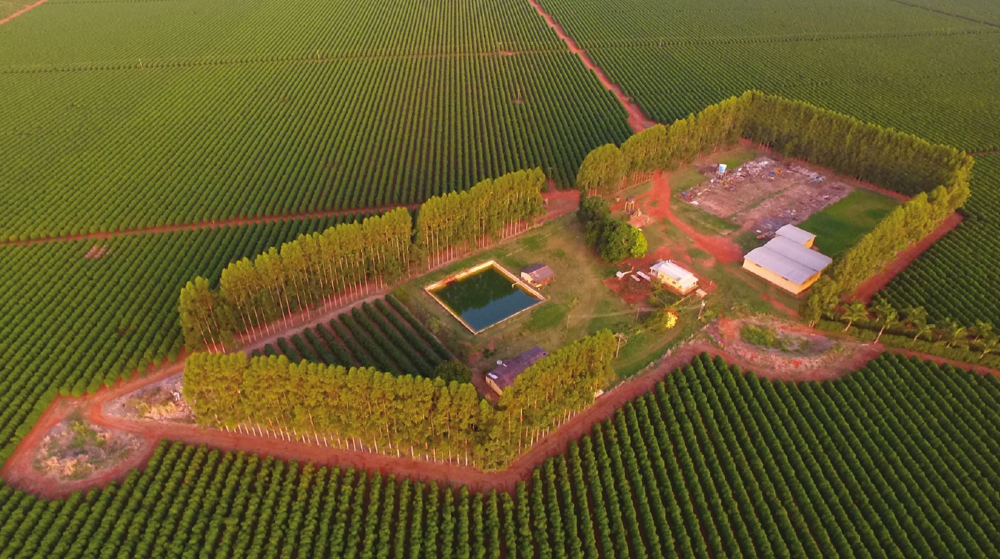
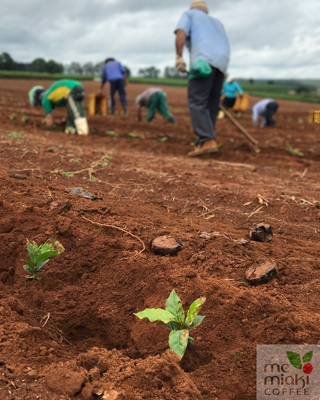
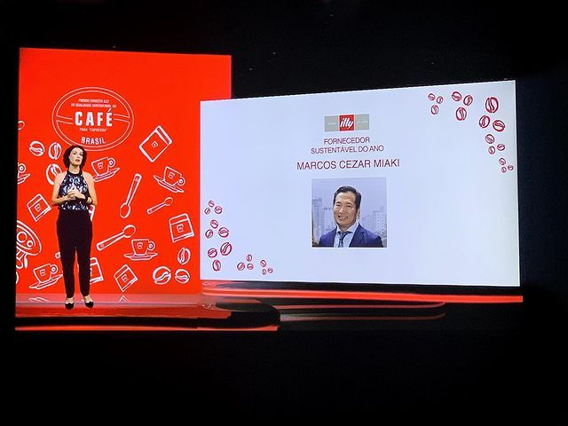

From Japan to theCerrado Mineiro
Coffee has been part of the Miaki family for generations. A story of new beginnings, hard work and passion for coffee spanning almost a century.
Three generations · since the 1930s
- 1930sParaná
From Japan to the coffee fields
Marcos Cézar Miaki's paternal grandparents arrive from Japan to work as settlers on coffee farms in Paraná.
- 1935Paraná
The first land
After years of hard work, the family buys its first coffee farm. The Santa Mariana and Formosa do Oeste fields follow. Since then, the passion for coffee has only grown.

- 1978Patrocínio, MG
The Black Frost and a new start
After the severe frost that wiped out Paraná's coffee, known as the Black Frost, the family sells its farms and moves to Patrocínio, in the Cerrado Mineiro. A new chapter of love for coffee begins.

- 1990sCalling
Marcos goes solo
Working beside his father, José Miaki, Marcos Cézar finds his calling and starts his own journey in coffee.
- 2000Founding
MC Miaki Coffee is born
Marcos Cézar and his wife, Brasemir, found MC Miaki Coffee, which would grow over the following years to six coffee estates.

- 2013Award
Ernesto Illy champion
MC Miaki coffee wins the Ernesto Illy Coffee Quality Award, one of the most respected competitions in Brazil.
- 2015Family
The second generation
Matheus and Amanda Ribeiro Miaki start taking an active part in the daily farm and business operations.

- 2018Management
Miaki Agronegócios
Miaki Agronegócios Ltda. is created to organize the group's operations for the next stage.
- 2020Award
Sustainable Supplier of the Year
illy names Marcos Cezar Miaki its Sustainable Supplier of the Year.

- 2025Award
Quality and quantity
3rd place in two categories of the Productivity Award at ACARPA's 33rd Coffee Seminar: 116 bags per hectare rain-fed and 104 irrigated. "It shows we are on the right track," said Amanda Miaki.

- TodayFuture
Looking ahead
Regenerative farming, irrigation, a trained team and new varieties in the field. The same passion, with eyes on the future.
The family tells its own story.
The fruit and recognition of constant work.
Among the many quality competitions, awards and honors our coffees have received, these are the highlights.
- 20252× 3rd
33rd Coffee Seminar · ACARPA
3rd place in the Productivity Award in two categories: rain-fed (116 bags/ha) and irrigated (104 bags/ha).
- 2020Honoree
illy · Sustainable Supplier of the Year
Recognition of the sustainable farming practiced on every estate.
- 2012 to 20208×
Ernesto Illy Quality Award
Finalist in 8 editions: 2012, 2013, 2014, 2015, 2016, 2018, 2019 and 2020.
- 20131st
Ernesto Illy Quality Award
National champion.
- 2017/18 cropFinalist
5th Cerrado Mineiro Region Award
Recanto Estate, finalist in the Pulped Natural category.
- 2015/16 cropFinalist
3rd Cerrado Mineiro Region Award
Shalom Estate, finalist in the Natural category.